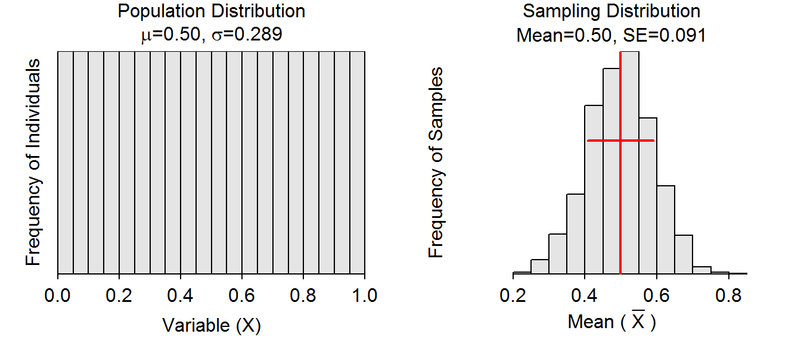

We can provide evidence to support (or not) the Central Limit Theorem (CLT) by (i) creating a known population, (ii) stating our expectations from the CLT for the sampling distribution of the means, (iii) repeatedly sampling fronm the population to construct a simulated sampling distribution of the means, (iv) recording results from the repeated sampling, and (v) comparing the observed results to what was expected from the CLT.
The cltSim() function (with no arguments) from NCStats provides an efficient method to create a known population, repeatedly sample (5000 times) from that population, and summarize the resulting simulated sampling distribution. For example, cltSim() produced the plots shown below. The histogram on the left is a known population distribution with the parameters (μ&σ) shown. The histogram on the right is a simulated sampling distribution; i.e., the distribution of means from 5000 independent samples of size n taken from the known population. In RStudio, this plot will have a gear icon in the upper-left corner that will open a dialog box that allows you to modify n. Additionally, you can control two shape parameters that will alter the known population distribution.

The table below can be used to efficiently record your expectations and observed results for different sample sizes.
| Expected from CLT |
Observed from cltSim()
|
|||||
|---|---|---|---|---|---|---|
| n= | Shape | Center | Dispersion | Shape | Center | Dispersion |
Use cltSim() and the table above to answer the following questions.
shape1=1 and shape2=1 (the default values).
cltSim()), the sampling distribution of the sample means to look like for n=10, 25, and 50. Record your expectations in the appropriate cells of the table from above.cltSim()) for the simulated sampling distributions of the sample means for n=10, 25, and 50. Record your observations in the approprate cells of the table from above.shape=1 and shape2=5.shape=5 and shape2=3.